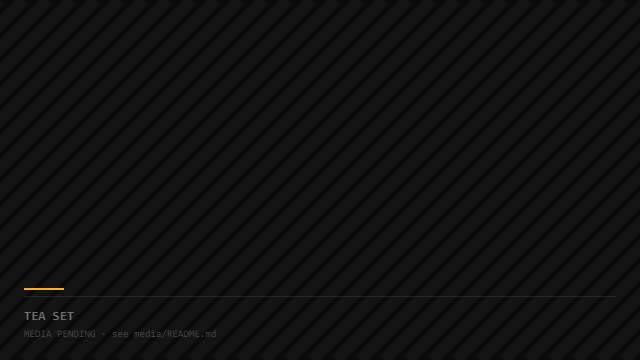
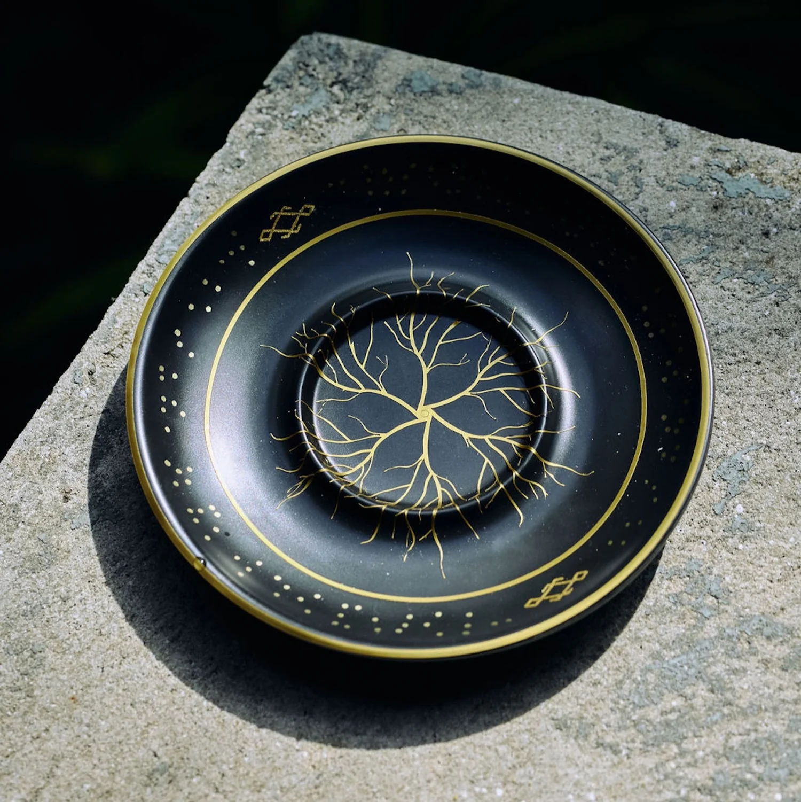
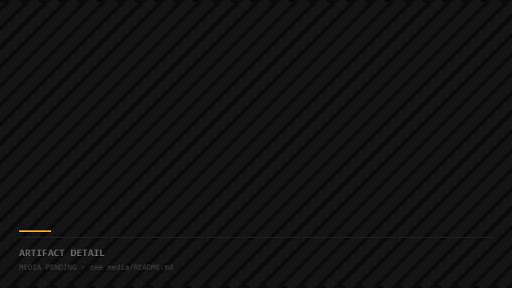

Thèria Haus
A world rendered in objects and light.

Overview
Technical consulting and asset delivery for The Nobody Co’s high-fidelity immersive brand experience — aligning creative intent with visual workflows, print fabrication, and AR.
A brand world this considered breaks if any one artifact — a print, an animation, an AR moment — falls out of register with the rest. The technical work is keeping the fidelity of the fiction.
I deliver the visual-technology layer: large-format print masters (the Print4 “Eden” series), product-launch visual prep, AR animation implementation, and workflow consulting that keeps creative intent intact through production.
A brand experience where the physical and digital artifacts feel authored by one hand — and a production pipeline the studio can keep using.
From file to object
Print masters and staged objects — the same world expressed at different densities.

